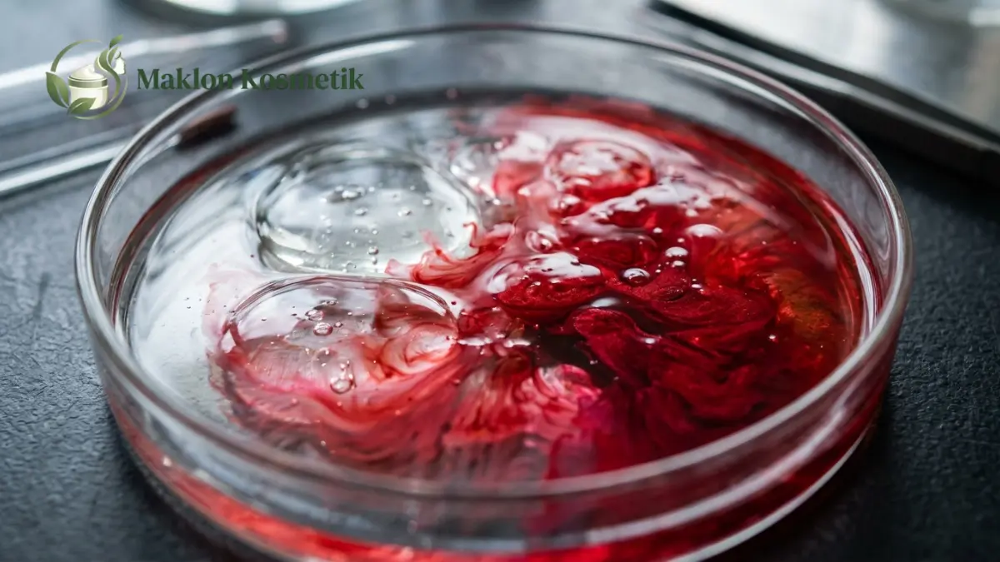

Maklon Lip Tint Stain Formula Viral: Tahan Lama Tanpa Bikin Bibir Kering

Daftar Isi Artikel Buka/Tutup
- Apa Itu Lip Tint Stain dan Bagaimana Cara Kerjanya?
- Apa Perbedaan Lip Tint, Lip Stain, dan Lip Cream?
- Apa yang Membuat Formula Lip Tint Tahan Lama Tanpa Kering?
- Tipe Formula Lip Tint Apa yang Bisa Dipesan Lewat Maklon?
- Bagaimana Menentukan Shade Lip Tint yang Sesuai Pasar?
- Bagaimana Alur Produksi Maklon Lip Tint hingga Siap Edar?
- Aspek Keamanan BPOM dan Kesalahan Umum Brand Baru
- Pertanyaan Umum (FAQ)
Ringkasan Poin Inti
- Lip tint stain meninggalkan pigmen warna alami yang menyatu ke lapisan terluar bibir tanpa rasa tebal.
- Kombinasi humektan gliserin, sodium hyaluronate, dan minyak nabati menjaga bibir tetap lembap seharian.
- Pilihan formula mencakup basis air (water-based), gel halus, maupun hybrid oil tint berkilau sehat.
- Pewarna wajib menggunakan daftar bahan aman BPOM yang terbebas dari cemaran logam berat berbahaya.
Apa Itu Lip Tint Stain dan Bagaimana Cara Kerjanya?
Maklon lip tint stain formula viral menjadi solusi unggulan bagi brand yang ingin menghadirkan riasan bibir tahan transfer. Produk ini meninggalkan noda warna segar alami yang awet saat makan dan minum.
Berbeda dengan lipstik klasik yang membentuk lapisan lilin tebal, pewarna cair lip tint meresap ringan ke lapisan epidermis bibir terluar. Setelah cairan pelarut mengering, rona warna tetap melekat tanpa mudah berpindah ke masker atau gelas.
Keberhasilan produk viral terletak pada sensasi pemakaian yang seringan air (bare-lip feel). Konsumen merasa tidak sedang memakai riasan bibir tebal meskipun warnanya tetap terpancar cerah.
Dengan sistem maklon di pabrik bersertifikasi CPKB, brand Anda dapat memproduksi formula lip tint inovatif ini dengan pilihan aplikator doe-foot lembut dan kemasan bening berdesain elegan.
Apa Perbedaan Lip Tint, Lip Stain, dan Lip Cream?
Meskipun sering dianggap serupa oleh konsumen awam, ketiga produk riasan bibir ini memiliki struktur formulasi dan karakteristik hasil akhir yang sangat berbeda di atas bibir.
Lip tint mengutamakan kesan rona alami yang transparan dan menyegarkan, sedangkan lip stain berfokus pada daya ikat pigmen yang lebih intens dan bertahan hingga belasan jam.
Sementara itu, lip cream memiliki konsistensi emulsi kental dengan daya tutup pigmen penuh (full coverage) yang lazimnya menghasilkan sentuhan akhir velvet matte atau semi-satin.
Saat menyusun lembar brief ke pabrik maklon, sampaikan secara spesifik tingkat daya tutup dan efek kilau yang diinginkan agar tim litbang mampu meracik formula yang tepat sasaran.

Apa yang Membuat Formula Lip Tint Tahan Lama Tanpa Kering?
Tantangan terbesar meracik lip tint adalah menghindari efek bibir pecah-pecah. Kulit bibir sangat tipis dan tidak memiliki kelenjar minyak alami, sehingga sangat rentan mengalami dehidrasi.
Formulator berpengalaman menyeimbangkan zat pembentuk film (film-former) dengan bahan humektan aktif seperti gliserin murni dan derivat sodium hyaluronate penahan kadar air.
Penambahan emolien ringan seperti minyak biji jojoba atau squalane nabati memberikan lapisan pelindung halus. Emolien ini mengunci kelembapan alami bibir tanpa menimbulkan rasa lengket yang mengganggu.
Sinergi bahan aktif ini menghasilkan efek rona bibir yang berkilau segar (plumped effect) sekaligus nyaman dipakai sepanjang hari tanpa memicu garis-garis kering di sudut bibir.
"Kunci produk pewarna bibir yang viral dan dibeli berulang kali bukan sekadar daya tahannya saat makan, melainkan kelembutan bibir pemakai saat produk tersebut dibersihkan."
Tipe Formula Lip Tint Apa yang Bisa Dipesan Lewat Maklon?
Pabrik maklon modern menawarkan tiga tipe basis formula lip tint yang dapat disesuaikan dengan identitas brand Anda: basis air (water-based), gel halus, dan hybrid oil tint.
Formula water-based sangat populer bagi target remaja karena menyerap secepat kilat dan memberikan efek gradasi bibir ala Korea (ombre lips) yang segar.
Formula berbasis gel menawarkan kemudahan saat dioleskan, tidak mudah menetes, serta memberikan pulasan warna yang lebih rata di seluruh permukaan bibir.
Sedangkan hybrid oil tint memadukan pigmen stain awet dengan kelembapan mewah minyak nabati, sangat digemari wanita karier yang menginginkan tampilan bibir sehat berkilau.
Bagaimana Menentukan Shade Lip Tint yang Sesuai Pasar?
Menentukan varian warna awal menuntut kejelian membaca tren warna kulit lokal. Jangan tergesa-gesa meluncurkan puluhan shade sekaligus yang berisiko menumpuk modal mati di gudang.
Mulailah dari tiga hingga empat warna inti: rona peach hangat untuk warna kulit sawo matang, cherry red klasik untuk tampilan cerah, dan nude mauve untuk pemakaian sehari-hari ke kantor.
Ujilah sampel warna pada panelis dengan rona dasar bibir yang berbeda, baik bibir terang maupun bibir dengan pigmentasi gelap. Formula yang baik harus sanggup menyamarkan ketidakmerataan rona bibir asli.
Bagaimana Alur Produksi Maklon Lip Tint hingga Siap Edar?
Proses maklon dimulai dari perumusan sampel tester di laboratorium R&D. Anda dapat mencoba tingkat kepekatan warna, aroma buah yang segar, serta daya rekatnya sebelum memberikan persetujuan produksi.
Setelah sampel dikunci, formula menjalani uji stabilitas suhu dan uji kompatibilitas kemasan untuk memastikan cairan tidak bereaksi dengan plastik botol atau spons aplikator.
Produksi massal dilakukan di ruang higienis berstandar CPKB, diikuti proses pengisian botol otomatis, pemasangan segel shrink wrap, serta pengemasan ke dalam dus kotak ritel berdesain cantik.
Aspek Keamanan BPOM dan Kesalahan Umum Brand Baru
Karena produk bibir berpotensi tertelan dalam jumlah mikro saat makan, regulasi keamanan bahan baku diberlakukan sangat ketat oleh otoritas Badan POM.
Pastikan seluruh zat pewarna (CI number) tercatat resmi dalam daftar positif kosmetik Indonesia dan terbukti bebas dari kontaminasi logam berat berbahaya seperti timbal, raksa, dan kadmium.
Hindari membuat klaim sensasional berlebihan seperti tahan 48 jam anti luntur yang justru menurunkan kredibilitas brand Anda saat diuji coba langsung oleh konsumen cerdas masa kini.
Ingin Membangun Brand Lip Tint Viral Anda Sendiri?
Konsultasikan ide varian shade, formula stain tahan lama tanpa kering, dan kemasan eksklusif bersama tim R&D Maklon Kosmetik ID.
Pertanyaan Umum (FAQ)
.webp)
Mega Anggun (Ega)
Praktisi & Konsultan Formulasi Kosmetik di Maklon Kosmetik ID. Berpengalaman mendampingi ratusan brand owner merintis produk kecantikan berstandar BPOM & Halal.